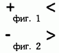
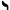
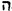
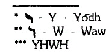

Беседа 2442 от 3877 · Беинса Дуно
Същественото
„Отче наш“
Имате ли тема? – /„Да“./ – Четете.
Чете се темата: „Съществената мисъл за всекиго едного от вас“.
Тогава, между две съществени идеи, коя е съществената? Сега, какво разбирате под думата „съществено“? Кое е същественото за болния човек? – /„Здравето“./ Хлябът не е ли съществен? Дишането не е ли съществено? Здравето е резултат от правилното хранене и правилното дишане. От какво произтича здравето? – /„[От] правилния живот“./ – За умния човек кое е същественото? За човека кое е същественото? Вие казвате, че на първо място е да мислим, да бъдем умни, то е същественото. Тогава, животът не е ли съществен? По какво се отличава един резултат? По какво се отличава същественото? Един от вас казва, че същественото е да бъде добър ученик. Да бъде добър ученик, това е резултат. Да вярваш в Бога, това е резултат. Да се храним добре, това е резултат. Има нещо, което те заставлява да се храниш. Кое е най-същественото, без което човек не може? Защото същественото трябва да определите в даден случай, не за през целия живот, кое е същественото. То не е същественото. За през целия живот да търсиш същественото, то не се мисли така. Какъв е целият живот? Целият живот не седи човек да живее осемдесет години. В дадения случай то е извън времето и пространството. В най-малкото време, [в] което ти не можеш без нещо. Има ли нещо, без което ти не можеш? Кое е онова, без което човек не може? – /„Без Бога“./ – Безверник си ти, как ще бъде то съществено за тебе? То са наши разсъждения. Най-същественото е онова, което не ти трябва. Щом съзнавате, че най-същественото е Бог, тогава не зная какво трябва да направите. – /„Да му служим“./ – Как? – /„Безкористно“./ – Да служи човек безкористно, с добро сърце, то са неща неопределени.
Общо не може да се определи, кое е най-същественото. Много работи има. Щом се домогнете до същественото, вие не можете да бъдете в това положение. Щом си ученик, ти не си при същественото, ти си при необходимото. Ти трябва да използуваш кое е същественото. Да кажем: Един се мъчи. Същественото е да се освободи. Той, след като се освободи, още не е при същественото. Коя е най-съществената мисъл? Да се освободите от всичко онова, което не ви трябва. По отрицателен път определяме същественото: да се освободим от всичко онова, което не ни трябва. То е същественото. Ти вярваш в Бога и се безпокоиш. Това съществено ли е? Кое те заставлява някой път да се съмняваш? Или ще кажеш: „Еди-кое си е същественото“, но това, същественото, тебе те безпокои. Същественото в живота, то не може да безпокои човека. То вече дава смисъл на целия живот. Сега вие може да дадете сравнение и да кажете: „Кое е същественото?“ Всички вие казахте по един съществен резултат. Да учи човек, да вярва в Бога, то е резултат. Това са усилия. Но съществената мисъл е ключ. Тя е пробният камък. Същественото в живота е пробният камък. Ти, като имаш пробния камък – съществената мисъл, ти всичките мъчнотии ще разрешиш. Другите разсъждават и казват: „Няма какво да мисли човек“. Щом [така] мислиш, ти мислиш по принуждение. Кое е същественото за водата? Вие ще кажете: „Да тече“. Ако водата е замръзнала? Следователно, същественото в живота, който животните имат, и живота, който човек има, тия мисли, които сега имате, то още не е същественото, те са преходни състояния, не са същественото. Същественото вие го свързвате с необходимото. Същественото с какво го свързвате? Кои неща наричат съществени? Вие нямате една идея за същественото. Във вашия ум трябва да седи една съществена мисъл. Туй трябва да подразбирате в буквален смисъл – свободата във всяко отношение. Трябва да имате ключа, за да бъдете свободни. Свободата е вече резултат на нещата. Най-съществената мисъл е път или ключ, или сила; щом я имате, с нея навсякъде ще бъдете свободни. Пък как ще знаете съществената мисъл? Можеш ли да знаеш това, което не си опитал? Вие казвате: „Съществената мисъл“. – Може ли да говорите за неща, които не знаете?
Аз ще си позволя да ви кажа един пример. Човек има пет сетива, нали така? Представете си, че в един човек зрението е слабо, той не вижда, но въпреки това, той има други сетива, с тях си служи. Някъде си служи със слуха, с пипане, с мирис. Той се домогва до ценни неща, за знанието се намира път. Защото в зрението е движението. Той, без да има зрение, ходи, но не така правилно. После, можем да кажем: „Добре да мисли човек“. То е процес. Коя е съществената мисъл? При съществената мисъл вие няма вече какво да се оплаквате от живота. Има ли някой от вас, който да не се оплаква? По този начин на разсъждение идваме до едно противоречие. Може да кажете, че този начин е метафизически. Дотогава, докогато човек има препятствия в живота си, той не е намерил съществената мисъл. Той казва, че служи на Бога, и пак има противоречия. Пак не е намерил съществената мисъл. Или можем да кажем, че е учен човек, и пак има свои препятствия. Във всички неща има нещо, което му липсва. Донякъде, идеята за съществената мисъл можем да обясним със следното: Когато дяволът напуснал небето, той дошъл на земята. Искал да се покаже на Бога, че и той може да направи нещо, та направил един човек. Направил го, [но] не могъл да му даде душа. Този човек-автомат тръгнал подир него и му казва: „Дай ми душа“. Той върви и онзи вика: „Дай ми душа!“ Цял ден вика подире му. Тръгнал дяволът до Бога. Той го преследва навсякъде. Тогава, туй, което вас ви преследва, какво е? Ако вие имате една съществена мисъл, която сте създали в себе си и [тя] ви гони, питам тогава: Какво сте направили? Ако тази идея така върви подир вас и хлопа ден и нощ, и казва: „Дай ми душа“, тогава, кое е същественото? Вие много материалистически [казвате] – „Да се служи на Бога“. Служенето, то е материалистическата идея. Вие по някой път свързвате добрия човек, доброто, с нещо материално. То е третостепенно. Ако вие сте на земята, може да направите добро, но ако не знаем [как], какво ще правим? Сега какво правите? Представете си, че сте в един свят, дето хората не са сиромаси, живеете в свят, дето всички хора имат, нямат нужда от нищо, какво ще правиш? Кое [е] същественото? Тогава ще се намерите в положението на човек, който напуснал земята и отишъл да живее в този, съвършения свят. Той мислел, че като иде между съвършените хора, ще си уреди работите. Като отишъл там, никой не му обръща внимание, всички си вървят. Чуди се, мисли, какво да направи, за да му обърнат внимание. Никой не му обръща внимание. Той на земята бил сиромах, избягал от неволята. Там неволя няма, но никой не обръща внимание на него. Никой не се разговаря с него. Всичко има там, но никой не [му] обръща внимание. Питам: Каква била съществената мисъл, че той отива в този свят? Вие сега мислите, че като идете на небето, всичките хора ще ви обърнат внимание на вас. Вие, като идете в някой град, или като идете в училището, искате да обърнете внимание на вас. Ако идете в училището, по кой начин ще обърнете вниманието на учениците и на учителите в това училище? По колко начина можете да заставите вашите съкласници да мислят заради вас? Първо, ако сте най-силен между тях. Второто положение кое е? Ако сте най-способен. Третото положение? – /„Ако направи[ш] погрешка“./ – Можете да направите погрешка само между умните хора, между глупавите хора не можете да направите погрешка никога. Представете си, че сте в един свят, дето всички хора правят погрешки, кой ще обърне внимание? В този свят може ли да направите погрешка? Аз вярвам в едно, че вие не правите погрешки без това. Но във вас едно е, че всички вие се стремите да не правите погрешки, а при това правите. Интересно е, че в този свят туй, което не искате, него постоянно правите, а онова, което искате да правите, него не правите. – /„Последователите на апостол Павел“./ – Апостол Павел беше недоволен от това положение. Той се оплакваше от своя недъг. Има степени на възможност. Кое [е] същественото качество на ученика? Да се учи ли? Той само за себе си мисли от сутрин до вечер. Мисълта е права, но тя е много ограничена. Способните ученици тук, на земята, са много амбициозни. Каквото направи, иска да обърне внимание на другите. После, способните професори са също амбициозни.
Трябва да дойдете до съществената мисъл. Под „съществена мисъл“ разбираме това, което ще ти даде развръзката. Тя ще ти даде път за разрешение на мъчнотиите. Тъй трябва да мислите. Има някои работи, за които може да мислите, но те не са съществени, не са от такава важност. Сега, едно обяснение. Мъчното е да се разбере същественото. Идеята не е съществена. Представете си, че девет от тия кибритени кутии, като драскате клечките, не се запалват. Само една кутия има, на която клечките се запалват, но вие не знаете коя е. Вземете една кутия, извадите клечка, драснете, не се пали. Вземете втора, трета клечка, не се пали. Колко клечки има в една кибритена кутия? – /„Четиридесет“./ – Хубаво число – четиридесет. Вземете втора кутия, драскате първата клечка, запалва се. То е същественото сега – огън, кибритена клечка, с която може да си свършите работата. [Ако] вие намерите съществения огън, работата е разрешена. Съществената мисъл разрешава един от най-важните въпроси в живота. Тогава с нея всичко можеш да постигнеш. То е същественото, така се мисли. Онези, [останалите] неща са необходими. Същественото е онова, с което всичко можеш да постигнеш, не изведнъж, но вече имаш ключа за постижение. Казва: „Да вярваме в Бога“. С това ще постигнеш ли всичко? Самата вяра не е съществена: Не знаеш как да вярваш. Казва: „Как се вярва в Бога?“ – Този въпрос ще ни отдалечи от днешната тема. Има ли човек в света, който да не вярва? – Няма. Защото след като тръгне безверникът да ходи, той има вяра, че може да ходи, защото ако няма вяра, не можеше да ходи. След като тръгнеш да вършиш каквато и да е работа, ти имаш вяра, ти имаш вярване в Бога. Казва: „Аз не вярвам в Бога“. Щом не вярваш в Бога, мисълта не е съществена. Щом мислиш, че без Бога можеш, то не е съществено. Щом се спори за нещо, то не е съществено. При същественото не може да се спорите. Когато хората спорят за Бога, то е крива идея. Имат съвсем материалистическа идея, мислят Господа като материален. То е тяхна идея, която са си създали, един кумир, на който те искат да се молят. Едно време хората се молеха, на какво? Нали всички вие в Бога вярвате? Но богатите вярват ли в Бога? Те вярват в парите си. Силните вярват ли в Бога? Те вярват в силата си. Учените вярват ли в Бога? Те вярват в знанието си. Вземете един цигулар, който отива да свири, той вярва ли в Бога? Той вярва в цигулката си – като тегли лъка, може да свири. [В] никакъв Господ отвън и отвътре не вярва. След като свърши, казва: „Господ ми помогна“. Че свирил добре, дали Господ му помогнал? Представете си: Един цигулар влезе в едно общество да свири, та малко се поразтопят хора[та]. Музиката малко разтопява. Хората са много студени, малко с музиката да ги свържат с нещо. Сега, музиката е нещо, което принадлежи на ума. Сега хората много често я разбират по един чувствен начин. Казва: „Аз усетих нещо“. Усещането принадлежи към нашите представи. По какво се отличава един цигулар като свири, от друг като свири? Или, какво е правилото, че някой свири по-добре от друг? То е наше субективно схващане. Ако двама певци пеят при един болен, болният може да познае, кой певец пее добре. Ако един певец пее, и болният казва: „Не ме смущавай“, той не пее добре. Ако дойде вторият, че като пее, болният даде внимание, този, вторият, пее по-добре. Ако не могат да те търпят да пееш, ти не си от добрите певци; ако те търпят, ти донякъде си. Щом не могат да те търпят хората, ти не си добър певец и добър свирец. Тогава ти ще кажеш, че те не разбират от музика. Остави това, че те не разбират. За да те търпят, ти трябва да пееш добре, трябва да има нещо в гласа ти. Най-първо, ако ти сам не можеш да се търпиш като пееш, ти не си добър певец. Ако свириш [така], че не можеш да се търпиш, ти не си добър свирец. Едно правило ще ви дам при музиката: когато свириш, ако не можеш да се забравиш, ти не си цигулар. Ако започнеш да свириш и мислиш за този, за онзи, не слушаш каквото свириш, ти не си добър свирец. В свиренето трябва да се забравиш, сам трябва да участвуваш, ти като свириш, се вдъхновяваш. Дали другите хора се вдъхновяват, то е друг въпрос. Този закон може да го проверите: Способният ученик не иска да вярват хората, че той е способен или не. Същото е и с учения човек. Онзи, който иска да е учен, и иска светът да го признае за учен, той още не е учен. Вие се намирате в положението, дето се събрали десет души юнаци и всеки започнал да показва неговата сила каква е, разправя какво е направил. Само един юнак от десетте мълчал. Всички се хвалят, че са юнаци, само той мълчи. Питат го: „Ти какво направи?“ Той духнал и всички се повалили на земята. Казват: „Кажи и ти нещо“. Само като духнал и големите юнаци налягали на земята. Кой е юнак сега? Той искал да каже: „Това са наши разсъждения“; като духнал, всичките големи юнаци се натъркаляли на земята. Какъв е изводът сега? Ако аз дойда при вас, които сте направили такива работи, и духна, вие къде ще бъдете?
Сега ще дойда да определя същественото в живота по отрицателен път. Ще ви приведа един пример, който донякъде ще ви изясни същественото къде е. Един гръцки зидар, във времето на Сократа било, когато гърците вярвали в Зевса, един голям майстор качва се на една къща отгоре да работи. По невнимание паднал долу, пък си счупил и двата крака. Не може да се помести. Занесли го в къщи, станал недоволен, обърнал се към Зевса и казал: „Досега аз мислех, че ти си един от умните богове, направил си света разумно. Но виждам, че не е много разумно направен. Ти трябва да направиш света така, че хората да не си чупят краката като падат. Какво си създал тия страдания? Тази работа трябва да я оправиш. Направи един свят малко по-разумен“. Най-после, след като мърморил така цяла седмица, идва един посланик от Зевса, който казва: „Какво искаш?“ – „Искам да бъда здрав“. – „Хубаво, още днес ще бъдеш здрав“. Като оздравял, той се качил на къщата пак да работи. Дига чука, удря върху гвоздея, той не се забива, удря, удря, най-после – разсърдил се, хвърля чука и той увисва във въздуха, не пада надолу. Взел триона да реже и той не върви. Хвърлил и него, и той увиснал във въздуха. Като се разгневил, и той увиснал във въздуха, няма кой да го снеме. Ден, два, три, седмица стои, не може да слезе отгоре. Пак започнал да мърмори: „Аз мислех, че ще направиш нещо по-хубаво, по-умно. Тук гладен ще умра. Онзи път си счупих краката, сега гладен ще умра“. Тогава Зевс ни казва: „Едно от двете ще бъде светът. Аз направих света такъв – да не си чупят краката хората. Тъй, преспокойно, няма да си трошат краката и никакви болки няма да чувствуват“. Тогава работникът казал на Зевса: „Моля ти се, обърни първото положение, което беше направил, и да имаме ум да разбираме, че да не си чупим краката. По-лошо е, когато няма никакво движение“. Какво разбрахте? Вие нали сте всички от мърморковците? Всички вие намирате, че този свят, както е направен, липсва му нещо, че не е направен така добре. Вие казвате: „Човек да бъде способен, това да направи, онова да направи“. Вие благодарете, че сте от глупавите хора. Ако един човек е беден, в какво седи лошавината на беднотията? Или, ако е богат, в какво седи преимуществото на неговото богатство? Вие турите на богатия нещо, което той няма, неща, които не [му] се падат, а на бедния не туряте. Казвате: „Той е беден човек“. Добре, ако той е беден или богат, в какво седи преимуществото на богатството? Да ви наведа на една мисъл. Представете си, че вие отивате на една чешма с пълно шише, напълнено, запечатано. Представете си, че туй шише ви е нужно, какво ще направите? Туй шише е богато. Какво ще направите, като идете при извора? Представете си, че шишето е пълно не с вода, а с друга някоя течност. Изпразвате шишето, но то пак има дъх, водата, която налеете, тя пак ще се поквари. При отиването на извора какво е потребно? Потребно е празно и чисто сърце. Ами че хората са такива. Ако ти си беден, ти си едно празно шише, имаш най-добрите условия. Щом си богат и осиромашееш, то е друг въпрос. Да си роден сиромах и да си роден богат. Ако ти си богат и осиромашееш, то е актьорство, то е представление, то не е реално. Той е богат човек, но той не е роден богат. Той е сиромах, [но] сиромах не е роден. Някой има ролята на сцената, че е цар, то е актьорство, той не е роден цар. Някой играе ролята на някой крадец, но той не е роден крадец. За уважение са богатите хора, за уважение са и сиромасите хора, които се раждат богати и сиромаси. Богатите са богати по единствената причина на сиромасите. И сиромасите са сиромаси по единствената причина на богатите. Богатите и сиромасите хора се много обичат. Най-голямата обич съществува между сиромасите и богатите хора. Аз тъй зная, и в природата нали е така.

Снощи бях на един концерт и хубаво свири. Този Боян Константинов свири много хубаво, защото Сашо беше отзад. След като посвириха, хващаха се за ръка. Благодарение на това той свири. Казва на публиката: „Благодарение на него аз свиря“. Казват: „Роден музикант“. Този се мъчи да бъде музикант, свири хубаво, технически придобивки на музиката има, [но] Сашо е роден музикант.
Сега, не разсъждавайте повърхностно. Всички сте чудни по някой път, когато разглеждате идеята за Бога. Ако не престанете да гледате на Бога другояче, вие нищо няма да постигнете. Сегашните вярвания спъват хората. Казва: „Да не вярваме“. Това спъва хората. Вие, като вярвате в Бога, ще бъдете един гениален музикант. Това е идеята. Ти, като вярваш в Бога, ще бъдеш гениален математик, естественик, гениален зоолог, социолог, моралист, във всяко отношение да бъдеш гениален. Ти, като вярваш в Бога, всичко може да бъдеш. Като не вярваш в Бога, нищо няма да бъдеш. Не само в едно отношение, но като се държиш за Бога, всичко онова, за което сърцето ти копнее и умът, [ще постигнеш]. Хващаш Господа за ръка и Той всичко може да направи. Щом си свирил хубаво, при Бога си; щом не си свирил хубаво, хвани Бога за ръката. Тази идея сега не е ли по-близка до сърцето, отколкото да вярваме в Бога със страх и трепет. [Да вярваме], но с любов. Тогава ще имаш един отличен ум, няма да бъдеш сиромах. Щом вярваш в Бога, ще бъдеш богат; щом вярваш в Бога ще бъдеш здрав. Навсякъде всичко можеш да направиш. Сега пак питате: „Как можем да го направим това нещо? Как да го направим?“ Да ви дам един пример как да го направите. Както и да ти разправя цигуларят и ти да го гледаш, ти, като вземеш цигулката, не можеш да го направиш. Нещата не могат да се направят. С уста не могат да се изговорят. Има нещо, което трябва да го учиш, след като го чуеш.
Казвам: Същественото, то е път за постижение на всичко онова, което желаеш не само за един момент. Аз съм казвал: за днес съществената мисъл, за даден момент, във всеки даден момент да имаш това, което искаш. Защото в един момент може само едно да искаш. Същественото в живота се разбира. Само едно нещо можеш да искаш в даден момент. За най-малката част от времето, която за нас е достъпна за нашето съзнание, в този момент трябва нещо съществено. Следния момент се изменя. Във втория, в третия, безброй са тия, във всеки даден момент да има онова, което е съществено за тебе. Същественото е онова, което ще внесе задоволство, че доволен да бъдеш. Следния момент първото доволство ще мине, ще дойде второ, трето, четвърто, пето. Та, същественото е само това, което задоволява всички копнежи на човека, не изведнъж, последователно.
Сега, да ми попеете, кое е същественото. Изпейте: „Аз смея да кажа“. /Всички изпяхме песента./ – Т.Р.Ц. – Песента изисква, първо, да топите, второ, да растете и трето, да цъфтите. После ще си вдигнете завивките и на работа ще отидете. Качеството на пеенето е да се стопиш. Аз не виждам никакво топене. Пък като пееш, трябва да растеш, да цъфтиш – разцъфтяване, връзване, плод – те спадат към разцвета. Щом се топиш, то е яйцето, имате основния тон ДО. Топенето е ДО. Турил си яйцето под кокошката да се мъти. То най-първо се разваля, но от това, разваленото яйце, ще излезе пиле. Най-първо вие трябва да се размътите. Вие съвсем други понятия имате. Трябва да се разцъфтите. Казва: „Размъти се“. Аз се радвам, когато срещна хора, на които умът се е размътил. Сърцето като се размъти, радвайте се, че сърцето се размътило. Ще се излюпи яйцето. Та вие не сте свободни. Ако извадя някого да пее, вие се смутите. Не се топите. Когото и да изкарам, казва: „Не мога“. Значи, не си стопен, не можеш да вървиш вече. Кой от вас ще стане да пее доброволно? Кой е най-разтопеният? Сега, ако сте някой друг, ще каже: „Че [той] е много горделив“. Кой е най-разтопен сега? После ще видим кой расте. Някой може да е разтопен, пък да не расте. Ще преведа песента: „Аз смея да кажа“. То е една форма. Аз смея да кажа, че мога да свиря. Това кой може да го отрече? Аз смея да кажа, че слънцето е светло. Слънцето като грее, то чувствува ли, че грее? То само изгрява, ние чувствуваме. Че то е светло, дали слънцето чувствува? Може би съществата, които са на слънцето, да чувствуват. Каруцата, която вози учените хора, знае ли, че са учени хора? Някой път и да знае, без разлика щ е. И конят може да знае, но без разлика [му] е, но в дадения случай ние съзнаваме. Как трябва да започне най-първо една песен? За да започнете една песен, вие не трябва да чувствувате мъчнотия при пеенето. Ако станеш да пееш, и основният тон не иде на песента, ти не си готов за пеене. Основния тон трябва да вземеш. Сега вие ако започнете, един ще вземе по-високо, други по-ниско, всички няма да вземете верния тон. Когато пееш, не трябва да чувствуваш никаква спънка, свободен трябва да се чувствуваш, една голяма самоувереност да имаш. Не самоувереност, която да няма място, но човек, който е самоуверен и знае. Аз смея да кажа, че слънцето е светло, нищо повече. Ако аз мисля, това не е атрибут само на мене. Аз мисля, понеже самата природа е разумна, аз съм отзвук, проявявам една нейна мисъл. Следователно, тя мисли повече, аз мисля върху нея. Аз се радвам, че мисля вече, като я съзнавам. Че когато аз стана добър, то е атрибут на Бога, на природата. Аз трябва да чувствувам, трябва да се радвам. Някой казва: „Аз съм добър човек“. То е съвсем материалистическо схващане. Ти всеки момент можеш да бъдеш добър. Никой няма да ти препятствува да бъдеш добър. След години искате да станете добри. Оставете тия празни работи.
Сега, аз този музикант го похвалявам в едно отношение. Той е паметлив, той запомнил всичко наизуст. Мислеше ли той къде, кой пръст да тури? Много добре изпълни цялата програма, там имаше два концерта. После, знае кога да започне – голяма самоувереност. Сега, би било интересно, ако десет души музиканти свирят, [в]се най-способни, и тогава да направиш разлика. Аз бих желал на един концерт да излязат не един, а няколко, трима, четирима, петима, ако дойдат десет души изведнъж, ще бъде още по-хубаво, тогава да се види, кой е пръв. По-интересно ще бъде тогава.
Вие трябва да се освободите. Имате едно състояние, което е наследено, чакате нещо отвън да дойде. Чакате благоприятни условия да дойдат. То е хубаво, но туй състояние, което вие чакате, то съществува в природата; че вие го нямате, то е друг въпрос. Да имаш условия, то е един резултат, да имаш една топла стая. Ти в даден случай можеш да нямаш пари, но ако си умен човек, ти всякога можеш да стоплиш стаята си зимно време. Няма голямо препятствие да стоплиш стаята си.
В пеенето трябва да се учите да пеете. Пеенето е идеал. Вие свирите, приготвяте начин за пеенето. Според мене, трябва да пееш и да свириш, не само да свириш, но да свириш и да пееш едновременно. Ако свирите и пеете, ще си помогнете много по-добре на себе си. Всеки ден, като станете, ако не можете да свирите, поне попейте си. Да не бъдете като безгласни риби. Някои казват, че не могли да пеят. Аз виждам, от вас най-способните не пеят, а пеят тези, които са последни. Мнозина има способни, не пеят. Някой, който не е способен, не е даровит, той пее. Казват: „Той роден да пее“. Онзи, роденият два пъти по-добре да пее, не пее. Пеенето е на третия свят. Пеенето във физическото поле е движение, пеенето в духовния свят е чувствувание, а в Божествения свят, то е мисъл. Да мислиш, то е пеене.
Вземете в български думата „Аз“. Англичанинът, който е по-практичен, казва: „ай“. Англичанинът казва „ай“ – турчинът разбира „месечина“, а англичанинът разбира „аз“ – човекът, който мисля. Българинът някой път във възклицанието казва „ай“. Как ще смените „з“-то? Пеенето, то е за вас. То е съзнанието в музиката. Имате и подсъзнание. Подсъзнанието включва минералите, включва и растенията. И в животните, и в човека има подсъзнание. Подсъзнанието в нас са онези преживелици, ония черти, които сме онаследили. Подсъзнанието е завършените неща, които ги имаме, в себе си ги носим. Съзнанието е в животните, то включва радости и скърби, удоволствия и неудоволствия. Съзнанието, то е у човека, то е представата у човека, а самосъзнанието е понятие вече. Представете си сега свръхсъзнанието. То е идеалният живот. То са идеалите вече. Подсъзнание, съзнание, самосъзнание и свръхсъзнание, през всичките тях трябва да е минал един музикант. За да може да даде израз, той трябва да повика всички ония опитности, набрани от безброй векове. Той трябва да има външна представа за конкретното, обективното, да го почувствува и след туй да дойде понятието на човека за неговата мисъл. Най-после в него трябва да се събуди Божественото. Тогава може да пее и да свири. Ти тогава трябва да се научиш да мислиш. Вие седите и казвате: „Аз смея да кажа“. Какво ще пееш: „Аз смея да кажа“. Че като мислиш за слънцето, ще помислиш за всички ония, които живеят на слънцето, те изпращат светлина. Аз смея да кажа, че те живеят, от всички тях може да се уча. Туй кой може да го отрече? Никой не може да го отрече. Кои хора могат да кажат: „Аз мога да го отрека“. Ако и ние сме на едно и също място 20–30 души на един хубав обяд, кой ще каже, че обядът не е хубав? Всички сме нахранени, усещаме се добре. Кой ще каже, че обядът не е хубав? Никой не може да каже. Онзи, който не е бил там, ще каже: „Аз смея да кажа“. Следователно, когато ние отказваме нещата в света, ние [не] сме [ги] вкусили, нищо повече. Туй, което човек [е] вкусил, не може да го отрече. Ако го отрече, то не е същественото. Същественото никой не може да го отрече. Съществените неща не се отричат, несъществените неща ние отричаме. Всяко нещо, което се отрича, то не е съществено. Сега, същественото във вас кое е? Колко пари вас ви трябват? [На] вас не ви трябват милиони. Аз бих ви привел едно доказателство. Трябва да ви го приведа, да се съгласите и да го знаете. Ако обичаш златото, ти си богат; ако си сиромах, ти не го обичаш. Затова си сиромах. Сега вие вярвате, че обичате някого, той не ви обича. Вие на земята имате една опитност и казвате: „Аз го обичам, но той не ме обича“. Ако ти обичаш и не те обичат, или ти не обичаш, или онзи, когото обичаш, не знае какво нещо е любов. Тогава, защо ще обичаш онзи, който не може да те обича? Какво ви заставлява да обичате този, който не знае да ви обича? Златото, това е едно условие. То се туря като емблема на живота. Онзи начин, по който [човек] може да се развива нормално, то е злато. Ако ти имаш това качество, златото ще дойде при тебе. Всички хора, отдето минеш, ще имат разположение към тебе, ти няма да бъдеш сиромах. При сегашното положение на живота, понеше нямате туй съзнание, намирате се в трудно положение. Вие съзнавате, че сте сиромах, съзнавате, че сте роден сиромах. Роден сте да бъдете сиромах, за какво? На български нали имате така: „Си“ и „Бо“. Имате „Бо“ и „Си“, какво става – „Сибо“. Русите казват: „Спасибо“. Благодаря. [Какво е] в дадения случай „Б“-то? В еврейския език, с „Б“-то е създаден светът. Нещата от „Б“-то започнали да растат. Ако искаш да растеш, богат трябва да бъдеш. „О“-то – имаш условия, по които животът да се развива. Ако искаш да намериш пътя на живота, да намериш истината, там ти трябва сиромашия. „С“-то е месечината, която приема светлина и изпраща. Ти, ако искаш да намериш истината, ако искаш да намериш доброто, трябва да идеш на месечината. Тя гледа земята никак да не дойде между нея и слънцето, тя знае, като види слънцето, тя приема светлина. После, светлината не е нейна – колкото приеме; задържа ли излишната светлина в себе си? Туй, което не трябва на нея, тя го изпраща на земята. Следователно, сиромашията е път, по който да възприемем светлината, и туй, което не ни трябва, да го препратим на другите. Де е сега лошавината в сиромашията? Няма никаква лошавина. То са ваши разсъждения. Ти ще кажеш: „Така се говори, но животът е груб“. В какво седи грубият живот? Запример, ако тук вие не можете да направите българската атмосфера по-мека, тогава какви българи сте вие? „Да съм един англичанин“. Англичаните са направили атмосферата по-мека. Вие направете на Изгрева атмосферата по-мека. Вие седите тук и не е толкова меко. Някои търсите меката атмосфера в света. Нямам нищо против. Светът пък търси меката атмосфера при нас, вие търсите в света. Вие мислите като че сте разбрали живота. Песента трябва да започне от СОЛ. После, „А“-то е важно. Туй е заченато[то]. Има нещо, което заченато. То е СОЛ, което помага за реализирането на човешките идеи. Щом си бременен с една идея, трябва да пееш „А“-то е бременно, натоварена камила е то. [Казваш:] „Аз“. Ако вземете в английски, там имате другояче – „I“ /„АЙ“/. То е десетата буква в еврейския език, тя е *  
/Пак драматично/. Как ще помогне на народа? Това е представление. Той трябваше да каже: „Днес, братя, дойдох между вас, ние сме богати хора, натоварени сме много, да се поразтоварим от нашите богатства, за да стане животът ни малко по-сносен“. /Учителя изговори това с много естествен тон./ Днес сиромаси хора няма, богати сме. В Бога вярвате, имате по-изобилно отколкото ви трябва. Вие казвате: „Кажи нещо, ти вече имаш нещата, ти трябва да знаеш.“ В растежа, в растенията има разбиране. [С] понятието вече влизаме в Божествения свят. В Божествения свят човек вече е готов да служи на един Божествен идеал.
Казвам: По някой път, когато сте неразположени, за един месец опитайте да пеете песента „Аз смея да кажа“ веднъж, два пъти. Ако изчезне тъгата, която имаш, ти си изпял правилно. Изпей я десет пъти и щом я изпееш десет пъти, остави. Два–три пъти я пей, за да видиш може ли да се измени твоето състояние. Ако в туй състояние тази песен предаде нещо, показва, че ти добре пееш. Пеенето е метод за свързване. Пеенето е връзка между разумните същества. Вие сега, като отивате някъде, хлопате. Ти сега, като идеш някъде, няма да хлопаш, но ще кажеш: „Аз смея да кажа, че вратата сега ще се отвори.“ Или: „Аз смея да кажа, че слънцето ще отвори вратата, за да влезе светлината вътре“. Ще отворят или няма да отворят. Да кажем, ако ви се даде известна задача, като идете някъде, да не хлопате на вратата, но да изпеете: „Аз смея да кажа, че слънцето е светло. Щом слънцето е светло, трябва да се отвори вратата, да се влиза и излиза навън“. Щом имаш това състояние, ще минеш в духовния свят, тия възвишени чувства, тогава, ще минеш в умствения свят. [След] пеенето на движение съществува пеенето в човешката мисъл. Тогава ще влезеш в Божественото. Трябва да пееш, за да влезеш в тия три свята. Най-първо, ще създадеш импулс за движение, за работа. После, създаваш в себе си [импулс] да чувстваш, след туй – да започнеш да мислиш. След пеенето ще дойдеш до онова, Божественото разбиране. Трябва човек да пее. Тия, класическите песни, духовните песни, тия мантри, които индусите имат, еврейските псалми, те са връзки за минаване от един свят в друг – физическия, духовния и умствения свят. Те трябва да се употребяват. Сегашните хора са станали материалисти, имат много ограничени [разбирания]. Казва: „Това са детински работи, какво ще пея?“ Ти, като пееш десет години, ще се подмладиш. Ако пееш два пъти, два пъти ще се подмладиш, три пъти ще се подмладиш, ако пееш. Ако си на 60 години и пееш, на 30 години ще станеш. Ако си болен, ще оздравееш. Някой може да пее, някой не може. Който не може да пее, не може да се подмлади. Тогава, трябва да знаеш да пееш, да дойдеш до Божествената интуиция. Ако можеш да привлечеш вниманието на ангелите, че ангелите да дойдат, тогава веднага ще се подмладиш. Щом ангелите обръщат внимание – пей. Щом те обърнат внимание, на място е пеенето. Та, или трябва да пееш, или трябва да слушаш. Когато някой пее хубаво, научете се да слушате или пък вие пейте. Я изпейте още веднъж „Аз смея да кажа“. Съществената мисъл, която трябва да остане у вас, е следната: Ако сте певец или цигулар, не мислете, че тези хора, на които пеете, са първокласни певци. Ще бъдеш свободен, ще кажеш: „Какво ли разбират от тия работи“. Ще можеш да свириш тогава. Ако мислиш, че те знаят, ако преценяваш, че те много знаят, ти ще мислиш, че те разбират, мислиш, че пееш на хора, които разбират пеенето. Те са на същия уровен на развитие, имат същия устрем като тебе. Когато пеете, във вас съзнанието да не е раздвоено. Ти казваш: „Кой ще ме разбере“. И после мислиш, че ще те критикуват. Когато някой иска да пее или свири, не трябва да бъде раздвоено съзнанието му. Затова някои избягват да свирят, защото го критикуват. Той трябва да свири за себе си. Някой пее, ще го критикуват. То е лошо. Човек да свири на себе си, няма кой да го критикува. Когато свирите или пеете, не се учете да критикувате.
Гледах тоз Камбуров, който се върнал от Англия, той има чисто английски маниери, ръкува се така, като англичанин. След месец като седи, пак ще стане българин. Англичаните са много оригинални. Те са много практични, те няма да те критикуват. Той ще ти покаже как, той ще го направи.
Гледайте сега да се различавате в пеенето. То е метод, то е хубаво да може човек да пее. Някои от вас, които сте даровити, да дадете подтик, светлина и другите да пеят. Гледам, толкова години, няма прогрес. Някой път го отдавам на тия диригенти при пеенето. Диригент в свиренето може да има, както и да е, но не и в пеенето. Певците трябва да бъдат съвършено свободни, певецът не трябва да бъде стеснен. Щом ти кажат де да издигнеш и снемеш гласа, ти не можеш да пееш. Той само трябва да даде направление. Вие сега как дирижирате, как свирите? С крак вие тропате, то е диригент. Първо, [при] пеенето [в] съзнанието трябва да има единство, в чувствата трябва да има единство, в мислите трябва да има единство. В чувствуването [и мисленето] – навсякъде трябва да има единство.
Същественото е това, което отваря път. Това, което отваря път за всички възможни постижения в света. То е същественото. Това, което отваря пътя ти за всички възможности, то е същественото, към него трябва да се стреми[ш]. Ако в Бога вярваш и приемаш силата Му, то е същественото. Ако ти вярваш в природата – пак същият закон. Единство съществува там. В този смисъл, хората са израз, едно проявление на Бога. Всеки от вас е проявление на Бога. Че Бог иска вие всички да пеете добре. Ако вие не пеете, няма да се развивате. Нали знаете, една цигулка, като се свири, тя се развива, като свири някой, тя придобива нещо. Ако имате една цигулка, на която триста години са свирили и друга, която така стои, след като е направена, тя пак ще придобие нещо, [ще] поизсъхне, но тя няма да има тази мекота на тоновете. Ако вие не пеете, пак ще придобиете нещо, ако пеете, ако свирите, ако мислите, ако чувствувате, ако постъпвате в тази разнообразна деятелност, която показва [развитие], ако превъзмогвате мъчнотиите, ще придобиете [същественото], както цигулкатата, която придобива цена. Сега ви пожелавам да бъдете родени богати, да бъдете родени сиромаси, да бъдете родени цигулари, родени певци, родени да мислите, родени изпълнители, родени, родени. Казвам ви, че всички сте родени, не се заблуждавайте в другото.
Божият Дух носи всичките блага на живота.
11. Лекция на Младежкия окултен клас, държана от Учителя на 6.XII.1935 год., петък, 5 ч. с., София – Изгрев 